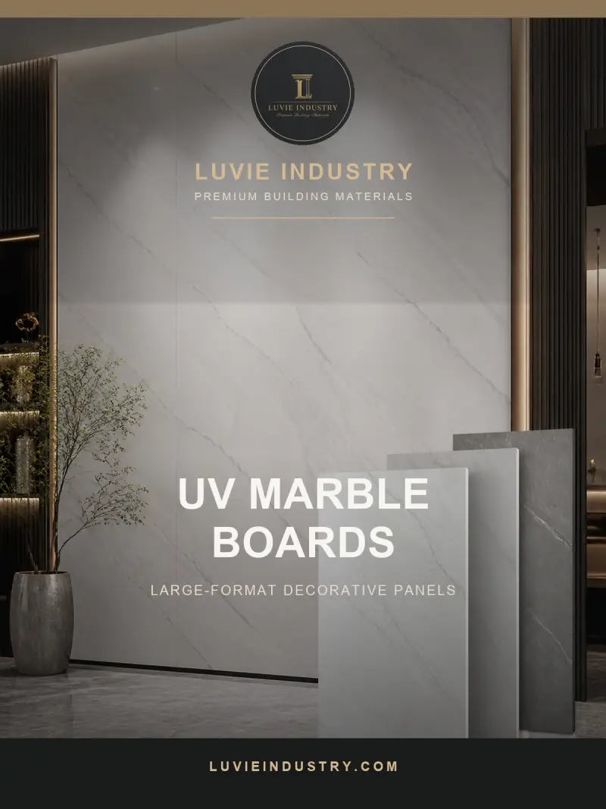

Are UV marble sheets waterproof?
A glossy UV marble sheet can be easy to wipe and still fail as a wet-area system if water reaches a joint or the board behind it. Buyers comparing large marble-look sheets with tile should ask where water goes at the bottom edge, around taps and behind a corner.

Do not equate a water-resistant decorative face with a waterproof room. Use the exact UV marble sheet only in approved exposures and specify the complete substrate, joint, penetration and maintenance system.
Identify the sheet construction
“UV marble sheet” is a marketing category, not one universal material. Ask for the core, surface coating, thickness, sheet size and intended use of the exact product. A hard glossy face may tolerate normal wiping while the cut edge, backing or adhesive has different limits. Request a physical sample that includes an edge and the proposed joiner profile.
Design the vulnerable places
Large format reduces the number of seams, but does not eliminate them. Show how sheets terminate at floor, ceiling, internal corners, windows and plumbing penetrations. In a shower or high-splash area, the installer should confirm waterproofing behind the finish and a compatible sealant or joining system. The EPA’s moisture guidance is a reminder that the whole wall and plumbing path control damage.
Document cleaning and replacement
Ask what cleaners are approved for the UV-coated face and how to avoid scratching it. A damaged large sheet may be more disruptive to replace than a small tile, so plan access and spare stock. For a distributor, label dry-room, splash-zone and direct-wet applications separately. That sales boundary protects the buyer from a broad “100% waterproof” promise that the installation cannot support.
Illustrative buyer situation
A hotel buyer wants large UV marble-look sheets behind bathroom vanities because fewer seams may be easier to clean. The vanity wall still has tap penetrations and a basin-to-wall joint. A mock-up should show those transitions, the sheet edge and the approved cleaning product. If the wall is already damp, the buyer should investigate before covering it. Fewer visible joints can improve the visual result but cannot replace a waterproofing and maintenance plan.
Buyer checklist before ordering
- Core, face and edge construction
- Approved wet exposure for the exact SKU
- Waterproofing, seam and penetration details
- Cleaner and replacement instructions
Save the approved sample, product code and document references with the purchase order. A catalog helps shortlist a finish but does not establish the final specification, local acceptance, price or delivery terms.
Common buyer questions
Can UV marble sheets be wiped clean?
Often the face is designed for easy cleaning, but use the maker-approved method for the exact finish.
Are sheet joints waterproof?
Only if the specified joint system is installed correctly for the intended exposure.
Can sheets cover a damp wall?
No. Diagnose and correct the moisture source before enclosing the wall.
Compare the range and request the exact specification
Browse the relevant product catalog (PDF, English), then tell Luvie the destination market, room or project use, approximate quantity and the finish you want to sample. We can discuss which current SKU and documents are available; do not assume a catalog image establishes certification or a guaranteed lead time.
Turn the question into a verifiable product brief.
Send the application and target market so the conversation starts with a specific product, sample and evidence request.
Ask Luvie about this use